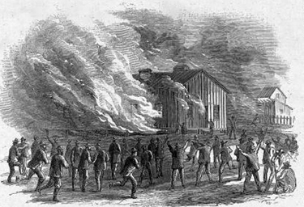
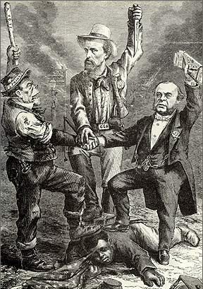

|
The Memphis Riot grew out of the tensions that existed between the
Irish-American and African-American workers just after the War. An
economically vibrant port city, Memphis was also a rowdy, crime-ridden,
corrupt place. From 1861 to 1866, Memphis experienced a tremendous rise
|

The Memphis Riot, as portrayed in the pages
of Harper's Weekly.
|
in its black population, including African-American soldiers. The
soldiers were stationed in Fort Pickering, alongside former contraband
camps, which by 1866 were transformed into largely black neighborhoods.
The influx of black people meant job competition with the large Irish
immigrant population of Memphis, a source of steady and growing
resentment for the latter group.
Reconstruction policy added to the uneasy atmosphere. Federal troops
were still in the city. An unrepentant white citizenry despised
Freedman's Bureau agents and teachers. The pre-war Memphis governing
class was stripped of its power, and Confederate veteran were denied the
vote. The Irish dominated the polls, and controlled all city offices,
including the Mayorship, the board of aldermen, and the police and fire
departments. There were frequent clashes between the Irish police and
freedmen in south Memphis, where most of the African Americans lived in
disease-ridden shanties. Newspapers played an important role in
worsening an already bad situation by printing inflammatory and racist
denunciations of the newly freed African Americans: "We are to have the
black flesh of the Negro crammed down our throats," ran one such
editorial.
|

This Thomas Nast cartoon, which appeared
shortly after the Memphis Riot, portrays Irish workers,
the Democratic Party, and former Confederates working together
to oppress African Americans.
|
On April 30th, four policemen got into a fight with a group of
recently discharged black soldiers. After a night of drinking, the
soldiers roamed the streets shooting their guns, sparking fear and anger
among whites. The next day, a collision between two delivery wagons
attracted the attention of a large crowd of soldiers and other black
men, who surged forth against the police. Soon, the situation spiraled
out of control, and what little professional discipline the Memphis
police previously exhibited was gone. The mayor was too drunk, and the
sheriff too weak, to organize a restraining posse. Mobs of white people,
including policemen and firemen, searched out and attacked helpless
African Americans. What followed was a tragic race riot, in which 46
black people and 2 white people were killed, 5 black women raped, and 80
people wounded. Property damage was estimated at $130,000, and black
churches, schools and homes were looted, destroyed and burned. Order was
restored when federal troops took control of the city.
The Memphis Riot had national importance. It demonstrated to the
North that the civil authorities in the South would not even minimally
protect black freedom. This cast a bad light on President Andrew
Johnson's very lenient Reconstruction program, and gave power to the
Radical Republicans in Congress who wanted a more harsh policy toward
the South.
Source: Joan Waugh, ed., Facts on File Encyclopedia of American
History: Civil War and Reconstruction, 1856 to 1869 (New York: Facts on
File, 2003), 232.
|